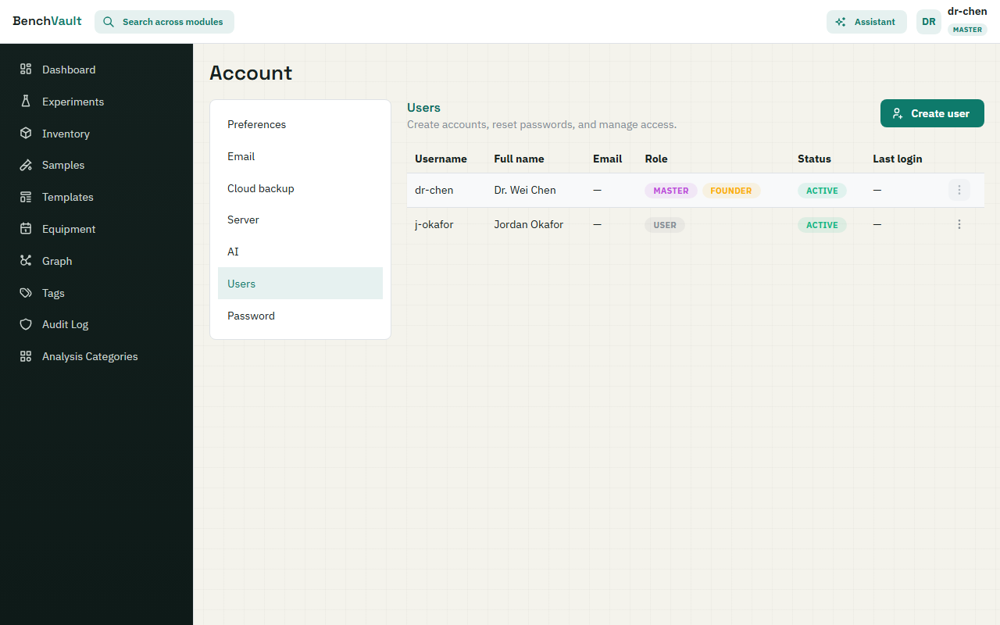
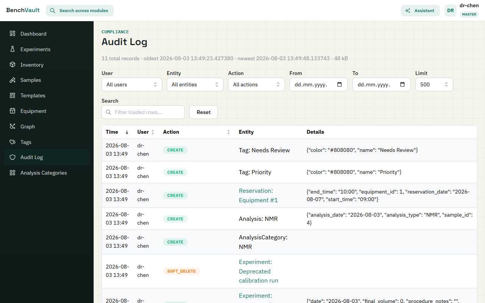

BenchVault v5.0.5
Administrator Guide
For Master users: managing accounts, settings, and the audit trail from inside BenchVault.
Everything here happens in your browser. For anything needing a terminal — backups, HTTPS, upgrades — see the Deployment Guide. For day-to-day lab work, see the User Guide.
What Master means
BenchVault has two roles.
Regular users work with their own records. They see the lab's shared data but can only edit and delete what they created.
Master users can edit and delete any record, and see admin-only screens that Regular users have no menu item for:
- Audit Log — the full change history
- Analysis Categories — the managed vocabulary for analysis types
- Most of Account — Preferences, Email, Backup, Server, AI, and Users
The first account created on a new deployment becomes Master automatically. That account is also protected: it cannot be deleted, so a deployment can never end up with nobody in charge.
Keep the number of Masters small. Every Master can delete anyone's data.
Users
Account → Users

Creating an account
Click Create user and fill in Username, Full name, Email, and a Temporary password that you choose. Leave Must change password at first login ticked so they replace it with something only they know — that is the point of the field being called temporary.
Then give them the username and that temporary password directly. BenchVault does not email invitations.
New accounts are Regular. There is no role picker on the create form. To make someone a Master, create the account first, then change their role from the user list — BenchVault asks you to confirm (Change "username" to Master?) because it is a significant grant.
Deactivate, don't delete
When someone leaves the lab, Deactivate rather than delete:
- Deactivate — they can no longer sign in, but everything they created stays intact and correctly attributed. Reversible with Reactivate.
- Delete — removes the account outright. Keep it for genuine mistakes, such as an account created twice.
Deactivation is almost always what you want. A departed student's experiments should keep their name on them.
Resetting a password
Reset password lets you set a New password for someone locked out, again with Must change password at first login available.
If you are locked out and no other Master can help, recovery is a terminal operation — see the Install Guide.
Feature toggles
Account → Preferences
These change BenchVault for everyone, not just you.
| Setting | Effect |
|---|---|
| Enable Inventory Module | Off hides Inventory from the sidebar for all users. Existing data is kept, just not shown. |
| Show Recent Activities | Off hides the recent-activity feed and the Activity page. |
| Auto-deduct inventory when creating experiments | On means adding a reactant subtracts that quantity from stock automatically. Off means stock only ever changes by hand. |
If someone reports a missing menu item, look here first — a toggle explains it far more often than a bug does.
Auto-deduct deserves thought before switching it off: with it on, inventory tracks real consumption without anyone remembering to update it. With it off, stock levels drift out of date quickly.
Analysis Categories
Analysis Categories (sidebar, Master only)
The list of analysis types users choose from when adding an analysis to a sample — NMR, HPLC, MS, and whatever else your lab runs.
Curate it. A short, agreed list keeps records searchable; free text produces "NMR", "nmr", and "1H NMR" as three unrelated things.
Audit Log
Audit Log (sidebar, Master only)

A permanent record of who changed what. It captures creates and updates across experiments, samples, analyses, and equipment with field-level detail — an update entry shows each changed field's old and new value, a create entry shows a snapshot. Saves that change nothing are not recorded.
Filter by user, entity type, action type, and date range, then search the results as text. Expand a row for detail, or follow the entity link to the record itself.
This is the screen for "who deleted that sample?" and for demonstrating data integrity to an auditor. It is Master-only because it exposes everyone's activity.
Audit Log vs Activity Log: the Audit Log is the formal, Master-only compliance trail. The Activity page is a friendly recent-changes feed all users see, governed by the Show Recent Activities toggle. Different things.
Account → Email
Configure SMTP — SMTP server, Port, Sender email, Password, and Use TLS — to let BenchVault send:
- Equipment reservation confirmations and reminders
- Low-stock inventory alerts
- Password-reset codes
- An optional weekly summary email
Without SMTP, BenchVault works normally but sends nothing, and self-service password reset cannot work — you will be resetting passwords by hand under Users.
Credentials are encrypted before storage, using a key kept in the data
volume. That is one more reason to back that volume up — see the
Deployment Guide.
AI Assistant
Account → AI
The assistant stays off until you supply your own provider credentials. Pick a Provider, enter an Anthropic API key or OpenRouter API key, choose a Default model, and optionally set a Monthly budget (USD) to cap spend.
Two things to be deliberate about: usage bills to your key, and enabling the assistant means lab data is sent to that provider for processing. Confirm that is acceptable under your institution's data policy before switching it on.
Cloud Backup
Account → Backup
Sends backups to Koofr, Nextcloud, pCloud, Box, or any WebDAV server. Configure the destination and credentials here.
This is not a complete backup strategy on its own. Read the backup section
of the Deployment Guide, which covers what actually
needs backing up — the database and the data volume holding attachments and
encryption keys — and, more importantly, how to practise restoring, so you learn
your backups work before you need them rather than after.
Server
Account → Server
Read-only status: version, database size, and record counts. Useful for a quick health check, or when reporting a problem.
Related
- User Guide — day-to-day use of every module
- Install Guide — first-time setup and recovery
- Deployment Guide — backups, HTTPS, upgrades